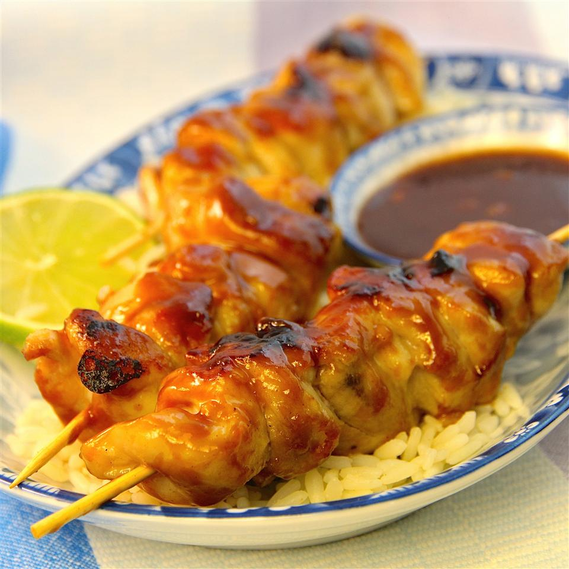

Chicken Skewers Recipe

Description
I'd like to share with you my recipe of satay ayam. It has helped me a lot to overcome my homesickness. I hope this dish will be one of your favorite Asian dishes.
Ingredients
- 1 pound chicken thighs, cut into 1/2-inch pieces
- ¾ teaspoon salt
- 1 pinch ground white pepper
- 1 tablespoon sunflower seed oil
- 24 wooden skewers
Peanut Sauce:
- 1 cup water
- 5 tablespoons peanut butter
- 2 tablespoons kecap manis
- 1 tablespoon brown sugar
- 2 cloves garlic, minced
- 1/2 teaspoon salt
- 1 tablespoon lime juice
Steps
- Combine chicken thighs, 3/4 teaspoon salt, white pepper, and sunflower seed oil in a bowl. Cover and refrigerate for 1 to 2 hours.
- Soak wooden skewers in water to prevent burning during cooking.
- Bring water, peanut butter, kecap manis, brown sugar, garlic, and 1/2 teaspoon salt to a boil in a small saucepan; stir to combine. Remove from heat and add lime juice.
- Thread marinated chicken onto skewers. Set about 2 tablespoons peanut sauce aside in a small bowl and brush the sauce in the bowl over chicken.
- Heat a grill pan or large skillet over medium-high heat. Arrange chicken skewers in batches on grill pan and cook until chicken is no longer pink in the center, 1 to 2 minutes per side. Serve skewers with remaining peanut sauce from the saucepan.
Main page